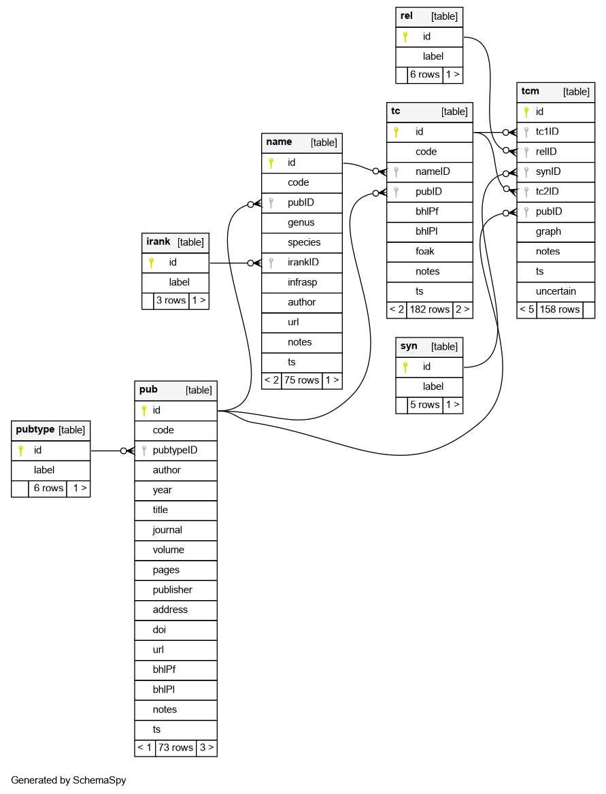
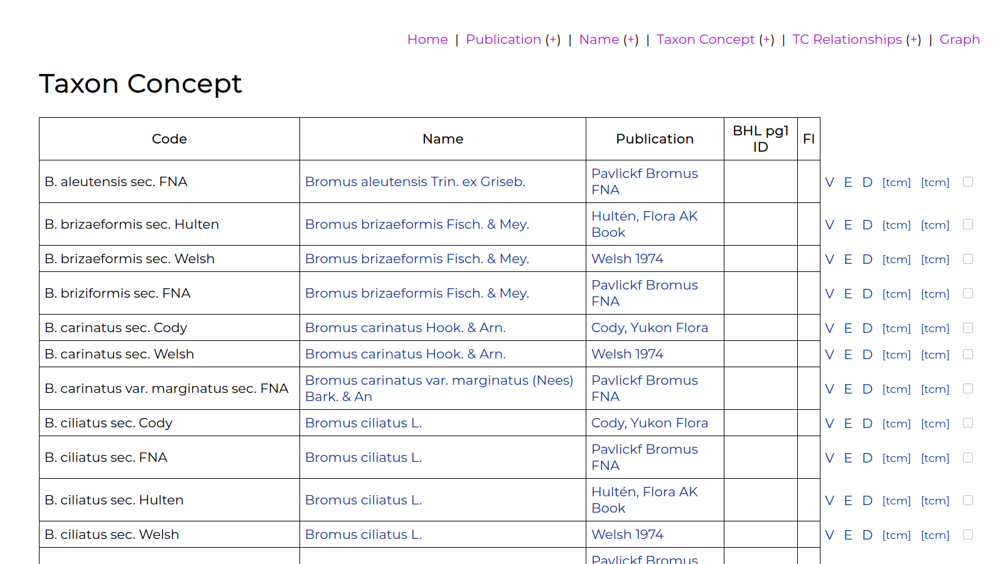
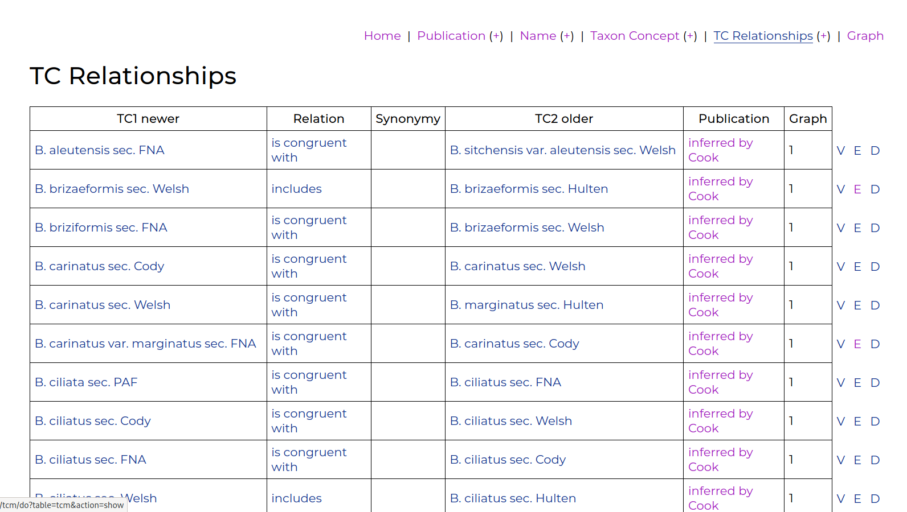

Blog 8: A taxon concept mapping tool
Posted by Cam on 2020-11-04
A central goal of this project is to confront the issue of Taxon Concepts, and develop solutions to manage taxon concepts for plants in the flora of Alaska.
Taxon Concepts
It has long been recognized that taxonomic names alone are not sufficient to communicate specific definitions (circumscriptions) of taxonomic groups of organisms, because the same name may be used in different ways by different taxonomists. The name is anchored only to a single type specimen, and not to an understanding, concept or definition of the taxon that ‘surrounds’ that single organism. Some taxonomists may take a broad view of a named taxon and lump together several pre-existing taxa, while other taxonomists may take a narrow view. This ambiguity presents many problems to users of names, for example making it difficult to combine specimens for ecological distribution modeling.
The solution is to always specify the particular usage of a name, with a reference to the publication or person using it. So, functionally, a Taxon Concept (TC; also known as a Taxonomic Name Usage, TNU) is the join between a name and a publication. It is easy to model this in a database, but very few biodiversity databases offer this facility. Our goal for the flora of Alaska is to list not just names, but also the various taxon concepts applied to each taxon, and their interrelationships.
Because taxon concepts represent sets of organisms, they can be related to each other using set relationship terms: is congruent with, includes, overlaps with, intersects and is disjunct from. For instance, we can say that Jane’s concept of species A is broader than John’s and includes John’s concept. These relationships are very useful to users of taxonomic names, permitting an understanding of the range of ways a name has been applied.
If we knew all the set members (organisms) of each taxon concept we could compute these set relationship terms for each pairwise comparison of taxon concepts. However, usually these interrelationships (or mappings, or alignments) have to be inferred by careful reading of taxonomic documents, a time-intensive human task, which is often cited as a barrier to the widespread adoption of taxon-concept-based approaches to biodiversity information management. A goal of our project is to explore whether this task can be shared out to non-specialists, who, with training, may be able to act as ‘taxonomic detectives’ and record details of taxon concepts and their relationships found in the literature. To this end, we are fortunate to have been joined by Kimberly Cook, who since the summer has been working through taxa in some complex genera (Erigeron, Bromus, Achillea,…), producing high quality data on taxon concepts and relationships.
The tcm web app
We have tried a variety of approaches to managing information on taxon concepts and relationships, and settled on a four-table data structure: Publications, Names, Taxon Concepts, and Taxon Concept Relationships. This structure can be implemented in a spreadsheet (see example), but is more robust in a dedicated relational database.
The general structure of such a database is not original, and has been implemented several times before, e.g., in ConceptMapper, TaxLink, and in the Berlin Model that underlies EDIT, the European Distributed Institute of Taxonomy. However, I was not able to easily install or borrow code from these other initiatives, and so made a simple (single Awk script) web app and database for Kimberly to use when entering and editing TC data. The app (imaginatively called tcm!) has a homepage on Github, with installation instructions; “some assembly is required”, but installation should only take a few minutes for someone with basic Unix and web development skills.
The ER diagram of the database is:

The basic workflow is:
- Enter publication details,
- Enter a name, referencing its original publication,
- Create a taxon concept, linking a name with the publication it is used in, 
- Create a relationship between two concepts, with a reference to the source publication in which the relationship was discussed. 
These relationships can be view a visual graph, which helps a lot in the development of chains of relationships. The app uses graphviz to generate an image file, which can be downloaded. 
The taxon concept relationships can also be exported as RDF, using the TDWG ontology. The app is very much a work in progress, as Kimberly and I discover useful, new bells and whistles, but the first release works well, and may be of use to others.